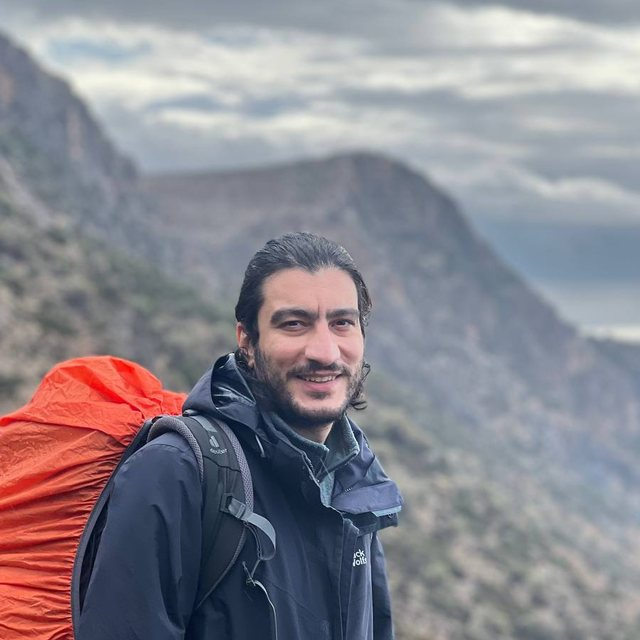

01
Immunometabolism & diabetes
How immune cell and plasma protein profiles track metabolic health, and whether they signal type 2 diabetes and elevated infection risk before the clinical diagnostic thresholds are crossed.
Pejman Shojaee — Postdoctoral researcher
Systems medicine · Multi-omics · Machine learning · Mathematical biology
Mechanistic models where the biology is understood, machine learning where it is not, and uncertainty quantification to keep the boundary between the two honest.
I currently work on how immune and metabolic signals reveal disease years before a clinical diagnosis — in biobank-scale cohorts of hundreds of thousands of people. Before that I spent four years modelling why glioblastoma comes back, and where to look to predict it.

About
Mathematical biologist and systems medicine researcher, Dresden.
My work sits at the point where a biological or clinical question has to become something quantitative. Sometimes that means writing down the mechanism and simulating it. More often, in high-dimensional biobank data, it means learning the structure from the data and then asking hard questions about whether the answer survives contact with reality — new cohorts, missing values, confounding, and the gap between a good AUC and a decision a clinician would actually make.
I am a postdoctoral researcher at Universitätsklinikum Carl Gustav Carus Dresden and TU Dresden, on the Präzisionsmedizin und Molekulare Prävention (PräMo) project. The driving question: can changes in the immune system and in blood proteins reveal the early signs of metabolic disease — particularly type 2 diabetes — long before a clinical diagnosis? I work with the UK Biobank alongside in-house cohorts, using machine learning to trace immune–metabolic connections over time. I am affiliated with the German Center for Diabetes Research (DZD) and the IRTG 3019: MEDIS graduate school.
My doctoral research at the Center for Interdisciplinary Digital Sciences asked when and where a glioblastoma comes back. I built hybrid in-silico models of tumour–macrophage interaction and coupled them with radiomic features from clinical imaging to predict time to relapse — and to work out which biopsies actually carry predictive information. PhD in Mathematics, 2025, supervised by Prof. Haralampos Hatzikirou.
The interesting problem is rarely fitting the model. It is knowing which parts of the answer the data can support, and which parts you are inventing.
Research focus
Where I work now, and the mathematical oncology the work grew out of.
01
How immune cell and plasma protein profiles track metabolic health, and whether they signal type 2 diabetes and elevated infection risk before the clinical diagnostic thresholds are crossed.
02
Predictive modelling across proteomic, metabolomic, imaging and clinical layers — plus the applied LLM and agent tooling that makes large-scale analysis and literature work tractable.
03
Hybrid and agent-based models of glioma–macrophage interaction, radiomics-based prediction of recurrence, and in-silico clinical trials over virtual patient cohorts.
AI
Models in production research, and the tooling around them.
Biomedical data is small where it matters, huge where it does not, and confounded almost everywhere. Most of the value is in the parts people skip: phenotype definitions, leakage, calibration, and knowing what a model cannot tell you.
Proteomic and immune-cell risk models over hundreds of thousands of participants: phenotype definition, FDR-controlled screening across thousands of analytes, time-to-event models, and pathway-level interpretation.
Feature pipelines from MRI and microscopy that hold up on small clinical cohorts — including an AI framework that predicts when tumour spheroids escape treatment control.
Where a mechanism is known, encode it; where it is not, learn it. Bayesian inference and surrogate models to solve the inverse problems that result.
An application built for the Perakakis Lab's in-house biobank that digitises the group's data and takes the manual work out of analysing it.
Multi-provider agent orchestration, Model Context Protocol tool servers, and automated literature pipelines that retrieve, summarise and publish research daily.
Solutions
Two audiences, two ways of working — the same underlying toolkit.
Biomarker discovery and prioritisation, risk models that are calibrated rather than merely accurate, validation and leakage audits, and analysis pipelines someone else can re-run a year from now.
Turning a clinical question into a tractable model, study design and statistical planning, mechanistic modelling of processes you cannot measure directly, and methods sections that referees do not fight.
Selected work
Biopsy location and tumor-associated macrophages in predicting malignant glioma recurrence using an in-silico model
The impact of tumor-associated macrophages on tumor biology under the lens of mathematical modelling: a review
Effect of nanoparticle size, magnetic intensity, and tumor distance on the distribution of the magnetic nanoparticles in a heterogeneous tumor microenvironment
Get in touch
I work with researchers, clinicians, health-tech teams and bioinformaticians at the interface of biology, data science and personalised medicine — from a one-hour sanity check on a study design to a full modelling collaboration.
Details